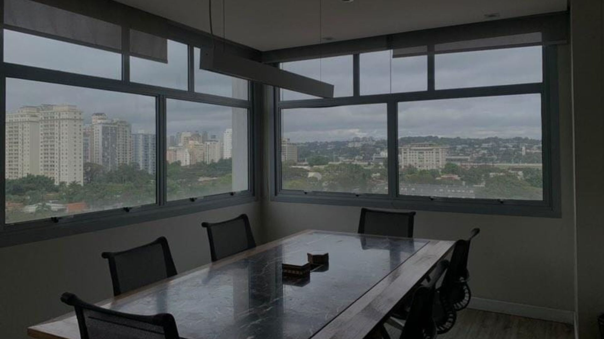

FRASCINO ADVOGADOS
Quem somos?
Equipe preparada para oferecer soluções jurídicas pautadas em valores éticos, com objetividade e celeridade, formada por profissionais graduados em faculdades de renome e com experiência em grandes escritórios e empresas, estruturado para atender as demandas jurídicas em nossas áreas de atuação com muita dedicação, pois sabemos que os melhores resultados são obtidos com trabalho duro e da relação transparente que desenvolvemos com o cliente.
A sócia fundadora CHRISTIANE MACARRON FRASCINO é formada pela Pontifícia Universidade Católica de São Paulo (2003), inscrita na OAB/SP sob o nº 224.139, com Mestrado em Direito Civil pela mesma instituição (2008) e professora assistente em Direito Civil na mesma instituição nos anos de 2004 a 2012. Foi Professora de Direito Civil na Universidade Mogi das Cruzes – Campus Villa Lobos (2010 a 2013) – São Paulo – SP. Palestrante da OAB-SP. Autora de artigos jurídicos. Atua, principalmente, nas áreas de direito civil, sucessões (inventário, testamentos), imobiliário, consumidor, contratos em geral, propriedade intelectual, direitos autorais; em negócios específicos, processos judiciais e administrativos ou rotinas empresariais. Idiomas: inglês e espanhol. E-mail: christiane@frascinoadv.com.br.
Áreas de Atuação
Nosso escritório pode funcionar como uma extensão da sua empresa, atendendo desde as rotinas de funcionários até o acompanhamento das pendências judiciais. Estudaremos o seu produto e sua empresa de modo a prestar serviços jurídicos com excelência. Como escritório moderno e digital reduzimos custos sem perder a excelência do trabalho. Nossos profissionais estão acostumados com o ritmo e rotina de grandes escritórios e de nossos clientes dos ramos de energia elétrica, telefonia, estacionamento, informática, construtoras, agronegócio e alimentos.
Atuamos em processos judiciais, administrativos ou arbitragem nas áreas de direito civil, sucessões (inventário judicial e extrajudicial), direito do consumidor, propriedade intelectual, direitos autorais e direito imobiliário (despejo, renovatória, revisional, usucapião judicial e extrajudicial, dentre outras). Estamos aptos a propor ou defender o interesse de nossos clientes em qualquer ação de indenização, com a expertise de advogados objetivos que sabem orientá-lo para preparar os documentos e provas determinantes para satisfação de seus interesses.
Na área consultiva atuamos na área de contratos em geral, na elaboração, análise, revisão e negociação, bem como em auditorias e consultorias legais, pareceres, palestras, planejamento sucessório. Atuamos em negócios imobiliários em geral, compra, locação, built-to-suit, leilão judicial ou extrajudicial, desde a negociação, análise de riscos, auditoria, elaboração de minutas, até o registro final. Contamos com equipe paralegal que atua na regularização de imóveis, registros, atualização de certidões na Grande São Paulo em Cartórios, Fóruns e outros órgãos da Administração Pública.
Contencioso Cível
Consultivo, Imobiliário e Paralegal
Na área consultiva atuamos na:
Área de contratos em geral,
Elaboração, análise, revisão e negociação, bem como em auditorias e consultorias legais, pareceres, palestras,
planejamento sucessório.
Negociação imobiliáriaem geral, compra, locação, built-to-suit, leilão judicial ou extrajudicial, desde a negociação,
análise de riscos, auditoria, elaboração de minutas, até o registro final. Contamos com equipe paralegal que atua na
regularização de imóveis, registros, atualização de certidões na Grande São Paulo em Cartórios, Fóruns e outros órgãos da
Administração Pública.
Tributário Contencioso
Na área tributária atuamos na: Elaboração de mandado de segurança de itbi, e itcmd (impostos), para garantir o recolhimento dos impostos com a base de cálculo reduzida.
Entreterimento
Nossa área de Mídia e Entretenimento foi criada para atender as demandas dos clientes inseridos neste setor e suas necessidades, de modo a oferecer consultoria e soluções jurídicas específicas, como: Alvará de participação de menor em filmagens, eventos e similares Questões relativas a produção audiovisual e fonográfica, Televisão, Mídias sociais, Direitos autorais, Propriedade intelectual e Direito de imagem.
Área da Saúde
Na área de saúde atuamos em serviços como: Obtenção de Habeas Corpus para garantir o cultivo de cannabis para uso medicinal (TDAH, Parkinson, autismo, dores crônicas, esportivas, cardiologia, psiquiatria). Obtenção de liminar para garantir medicamento e procedimentos cirúrgicos negados por convênio
Colaboradores
Paralegal: Carolina Colaquises Carneiro
Principais Atividades: Pesquisa de jurisprudências, doutrina e legislação, elaboração de peças processuais, auxílio em auditorias imobiliárias e diligências em fóruns ou cartórios.

Localização
Nosso escritório fica localizado na Av. Brg. Faria Lima, 1826 - cjo.910 - Jardim Paulistano, São Paulo - SP, 01451-001